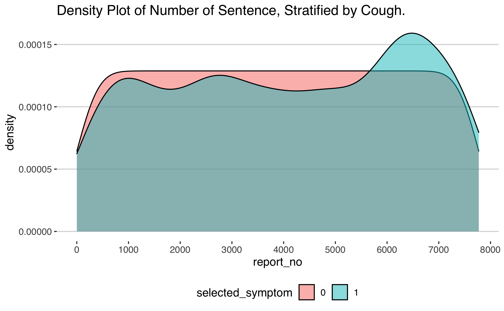
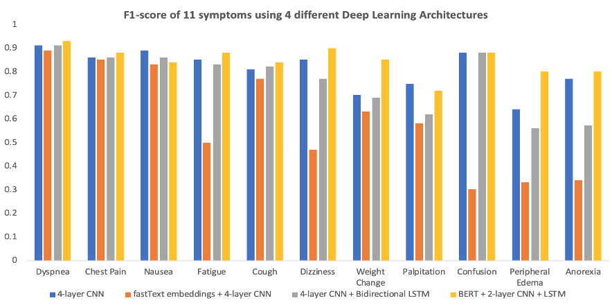

Technologies:
transformers and transformers_interpret) for BERT model buildingstreamlit) for applicationtidyverse, keras) for data cleaning, visualization and CNN/RNN model buildingshiny) for visualizing the training progresses and NimbleMiner for training set buildingIn this project, I investigated whether using deep learning models on a medical records corpus of notes will result in better predictive performance compared to traditional machine learning methods. I used a collection of deidentified patient’s discharge notes that have been annotated for 11 symptoms: dyspnea (shortness of breath), chest pain, nausea, fatigue, cough, dizziness, weight change, palpitation, confusion, peripheral edema and anorexia.
I compared the performance (accuracy) between two machine learning models (logistic regression and random forest) as baseline models, with multiple NLP deep learning models. I found BERT with two additional layers of CNN and LSTM added significant benefits over the baseline models.
Using a deep learning model to detect symptoms from medical notes can save time and resources during outpatient visits. A clinician or nurse can quickly pinpoint which symptoms the patient has, compare with symptoms in the past and come up with more accurate and efficient treatment plan.
There are many challenges that are associated with natural language processing in healthcare. Previous studies have shown that the traditional machine learning methods’ inability to effectively model the subtleties of the medical sublanguage hinder performance. In addition, traditional NLP methods can work with synonyms but not similar terms, so many of them suffer from the curse of dimensionality. In the face of such challenges, advanced methods in natural language processing such as CNN, LSTM and BERT are gaining popularity thanks to their ability to capture and model contexts in long text sequences.
The project used a dataset of discharge notes for patients with heart diseases. The training dataset has 8,031 notes, and the test dataset has 293 notes. The test set is a gold-standard, human-labeled dataset while the training set is generated by NimberMiner. There are eleven symptoms in the datasets. They all have class imbalances: the negative class outnumbers the positive class across symptoms. Some deep learning models that I used, such as BERT, address the issue of class imbalance better than others do. The class imbalance is presented as follows:
| Symptom | Training Set | Test Set |
|---|---|---|
| Dyspnea | 39% | 49% |
| Chest Pain | 30% | 30% |
| Nausea | 21% | 21% |
| Fatigue | 18% | 23% |
| Cough | 16% | 21% |
| Dizziness | 14% | 15% |
| Weight Change | 10% | 9% |
| Palpitation | 8% | 5% |
| Confusion | 8% | 11% |
| Peripheral Edema | 7% | 11% |
| Anorexia | 5% | 8% |
The notes are in the form of free-text. They do not have strict structure and vary in length based on the symptoms of each patient and their severity. The training set and the test set are relatively similar in terms of length: the maximum length is 4,547 words for the training set and 4,273 words for the test set, and the average length is 1,025 for the training set and 1,336 for the test set.
The notes with symptoms are likely to be longer. This is true across symptoms. An example for cough is shown:

For this project, I chose logistic regression and random forest as the baseline models. Logistic regression and random forest have been used widely as predictive models of choice for text classification. For logistic regression, I transformed the notes into sparse matrices before training the model. For random forest, I also transformed the notes into sparse matrices, and then used the ranger implementation of random forest in the R language, using twenty decision trees and impurity as the importance metrics. Among these two baseline models, random forest has been widely used in natural language processing tasks because it is highly interpretable.
Traditional NLP methods, such as the baseline models, are limited by their vocabulary dictionary for predictive tasks and require complex processing steps. In addition, simplistic models such as logistic regression cannot effectively recognize the semantic relationships between words and n-grams. I chose to perform text classification using word embeddings and convoluted neural networks (CNN) because such models don’t have these restrictions.
I experimented with four different architectures: (1) a 1-layer embedding and 4-layer CNN; (2) a 1-layer fastText embedding and 4-layer CNN and (3) 1-layer embedding, 4-layer CNN followed by a 1-layer Bidirectional Long-short Term Memory (LSTM) and (4) a BERT layer, 2-layer CNN and 1-layer LSTM. I trained binary classifications using these 4 architectures for all 11 symptoms. These models are trained using the keras library in R with a tensorflow backend.
I found that deep learning models, on average, produced better performance when compared with traditional machine learning methods. A full accuracy comparison can be found in the table below.
| Symptom | Logistic Regression | Random Forest | 4-layer CNN | fastText embeddings + 4-layer CNN | 4-layer CNN + Bidirectional LSTM | BERT, 2-layer CNN and LSTM |
|---|---|---|---|---|---|---|
| Dyspnea | 0.19 | 0.9 | 0.91 | 0.89 | 0.91 | 0.93 |
| Chest Pain | 0.24 | 0.79 | 0.86 | 0.85 | 0.86 | 0.88 |
| Nausea | 0.19 | 0.42 | 0.89 | 0.83 | 0.86 | 0.84 |
| Fatigue | 0.08 | 0.86 | 0.85 | 0.5 | 0.83 | 0.88 |
| Cough | 0.32 | 0.79 | 0.81 | 0.77 | 0.82 | 0.84 |
| Dizziness | 0.14 | 0.8 | 0.85 | 0.47 | 0.77 | 0.9 |
| Weight Change | 0.14 | 0.65 | 0.7 | 0.63 | 0.69 | 0.85 |
| Palpitation | 0.00 | 0.56 | 0.75 | 0.58 | 0.62 | 0.72 |
| Confusion | 0.21 | 0.9 | 0.88 | 0.3 | 0.88 | 0.88 |
| Peripheral Edema | 0.17 | 0.69 | 0.64 | 0.33 | 0.59 | 0.8 |
| Anorexia | 0.00 | 0.65 | 0.77 | 0.34 | 0.57 | 0.8 |
Since deep learning models outperformed the baseline models, below I presented the accuracy and F-score of all 11 symptoms using 4 different deep learning architectures.


I also found that the prior of each symptom was important, as the deep learning models had more signals to learn from. The high-prior symptoms (such dyspnea and chest pain) had higher test accuracies.
| Symptom | Logistic Regression | Random Forest | 4-layer CNN | fastText embeddings + 4-layer CNN | 4-layer CNN + Bidirectional LSTM | BERT, 2-layer CNN and LSTM |
|---|---|---|---|---|---|---|
| Prior >15% in training set | 20.40% | 75.20% | 86.40% | 76.80% | 85.60% | 87.40% |
| Prior <15% training set | 11.00% | 70.83% | 76.50% | 44.17% | 68.67% | 82.50% |
| Difference | 9.40% | 4.37% | 9.90% | 32.63% | 16.93% | 4.90% |
As EHR is becoming ubiquitous and machine learning algorithms for natural language processing are developing very quickly, there are ample opportunities for improvements. There are more features available in the dataset, such as patients’ ages, time and dates of the discharge notes and so on. I can potentially use these features to impose a temporal structure on our data set to not only predict a symptom, but also predict when it will occur in the future.
I also put together a streamlit application that applies the trained BERT model to predict whether a note has any of the five symptoms (dyspnea, chest pain, nausea, fatigue and cough). I will deploy this application when receiving appropriate infrastructure from streamlit.